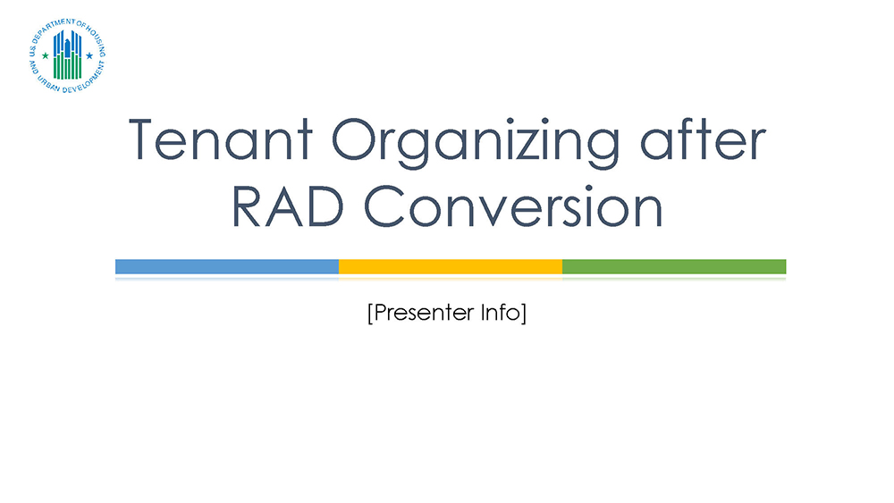

We the People of 1760
Lawfully Organizing for Accountability


Lawfully Organizing for Accountability
The tenants of a multifamily housing project covered under § 245.10 have the right to establish and operate a tenant organization for the purpose of addressing issues related to their living environment, which includes the terms and conditions of their tenancy as well as activities related to housing and community development.
A tenant organization is legitimate if it has been established by the tenants of a multifamily housing project covered under § 245.10 for the purpose described in § 245.100, and meets regularly, operates democratically, is representative of all residents in the development, and is completely independent of owners, management, and their representatives.
HUD letter highlights certain key features of Part 245 and serves as a reminder that compliance with these requirements is expected.
During the past several years, HUD and Congress have made changes to the income-based housing. This presentation can give you an overview of those changes. We will do our best to update this as new information becomes available.
Click here to download a copy of this presentation from the HUD Library.
CSCD was established by the San Francisco Housing Authority prior to our conversion from Public Housing to RAD funding and has been kept in place to assist our Senior and Disabled (and formerly homeless residents) Neighbors.
For Tenant Associations to be legitimate and recognized by HUD, Tenant Associations are required to utilize an Independent Third Party to provide financial oversight and election services. Independent Third Parties establish trust between the Board Officers and the Residents by providing transparency and accountability.
Every Tenant Group or Association must be run by the Residents who live on the property. CCSD offers training on HUD rules , Robert’s rules of Order and partnering.
Operating a Tenant Association supported with HUD funding has many subtle complexities which no untrained person should be expected to know. Our committment to CCSD Member Tenants is to facilitate Tenant services while providing accountability for the Board.
CCSD provides
All Members are required to submit financial reports every three months to our treasurer for auditing. We provide a written report of findings.
We work with your secretary to schedule and post Nominations Meeting and election Meetings, according to Robert’s rules and your Bylaws (which are required for California Nonprofits and ensure transparency and fairness.
Contact Board Secretary 7 days in advance to add Agenda Items to any meeting.
For more information, please email: